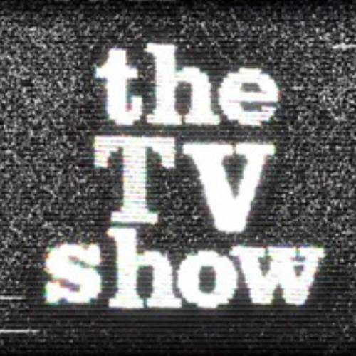

Телевизионни шоу-програми
Какво представлява шоуто
|  | Телевизионните предавания се създават от телевизионните продуценти, за да отговорят на разнообразните предпочитания на зрителите на съответния канал. Шоуто е предвидено да забавлява или информира драгия зрител. Предаванията са предвидени за различни групи от населението - има готварски - за любителите на готвенето, Певчески, хумористични, информационни и още безброй. |
Популярни шоу-програми в България
 |
В живота на телевизионната медия много шоу-програми са минали през българския ефир, но малко от тях са се задържали за дълго време. Абсолютен рекордьор в задържане на българския ефир - това е Шоуто на Слави Трифонов. През годините много от предаванията спряха да се излъчват, но на тяхно място възникват нови - някои по добри, други не. Тук сме Ви показали някои от най-популярните български шоу-програми, такива които вече са свалени от ефир, и такива които са още на екрана. |
Любимите Ви ТВ предавания от 90-те до днес!